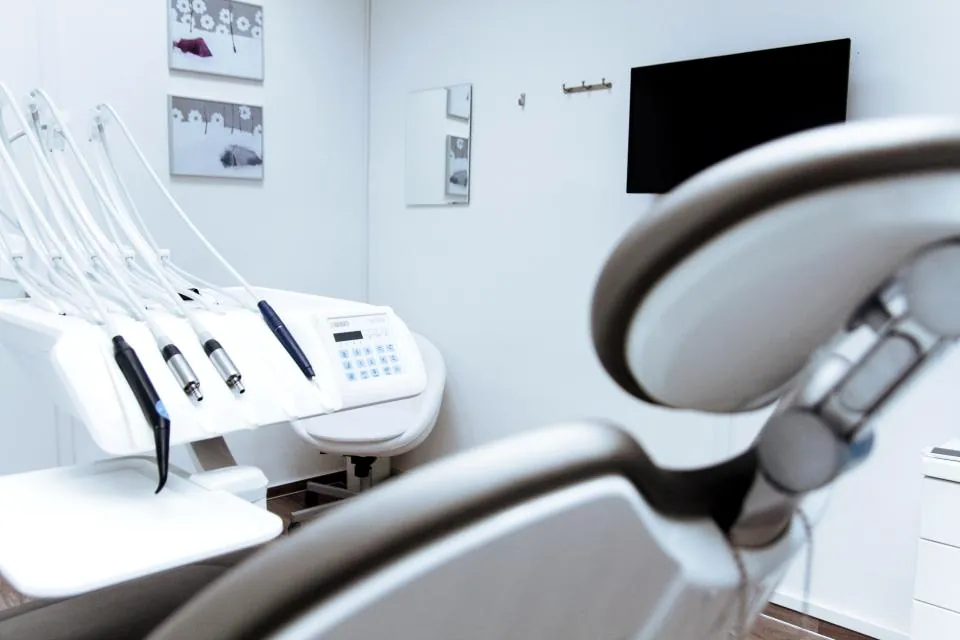
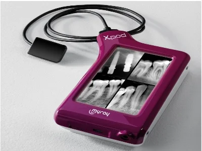
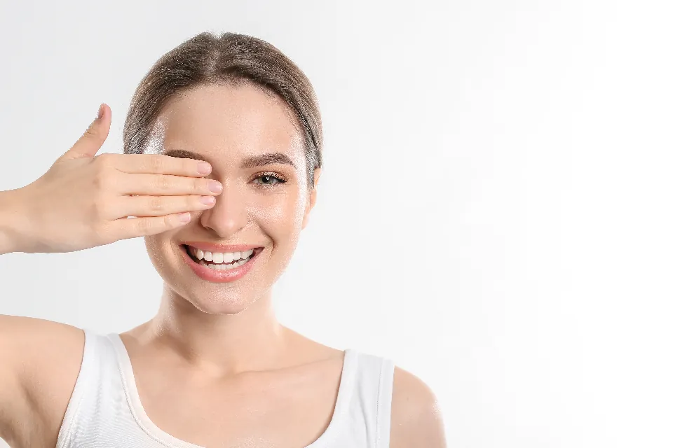

Tecnología de vanguardia
Podemos ofrecerte el mejor plan de tratamiento y hacer un mejor diagnóstico gracias a nuestra tecnología de vanguardia.
Dento Imagen Nvo. Vallarta dispone de todo lo necesario para que nuestros pacientes estén cómodos, relajados y puedan recibir los mejores tratamientos dentales. Contamos con los equipos dentales más modernos y lo más destacado en radiología digital.

Podemos ofrecerte el mejor plan de tratamiento y hacer un mejor diagnóstico gracias a nuestra tecnología de vanguardia.
Radiografías digitales al instante, con menos radiación y una imagen más nítida para ver cada detalle.
Te explicamos tu tratamiento con calma y en tu idioma, para que decidas con total confianza.
Un equipo de especialistas en distintas áreas de la odontología, para atender todo en un solo lugar.
Con la radiovisografía vemos tu diente en pantalla en segundos. Así te mostramos qué pasa, por qué y cuál es la mejor solución, antes de empezar.

Toca cualquier servicio para conocer más.
Contamos con el mejor servicio de ortodoncia respaldado con herramientas de alta tecnología para que tu sonrisa sea la mejor.
Quiero mi valoraciónMantén tu salud dental con una limpieza profesional periódica.

Espacio para su formación, años de experiencia y especialidades. Atiende en español e inglés.
Nombre, foto y breve presentación.
Nombre, foto y breve presentación.
Instalaciones modernas en Plaza Parabién, Nuevo Vallarta.
Desliza para comparar. Cada caso se publica con autorización del paciente.
Aquí irá una reseña real de Google, en su idioma original.
Aquí irá una reseña real de Google, en su idioma original.
Aquí irá una reseña real de Google, en su idioma original.
Aquí irá una reseña real de Google, en su idioma original.
Llena el formulario y se abrirá WhatsApp con tu mensaje ya escrito. Te respondemos en horario de consulta.
Propuesta de diseño — Elaborado por Venosa Consulting